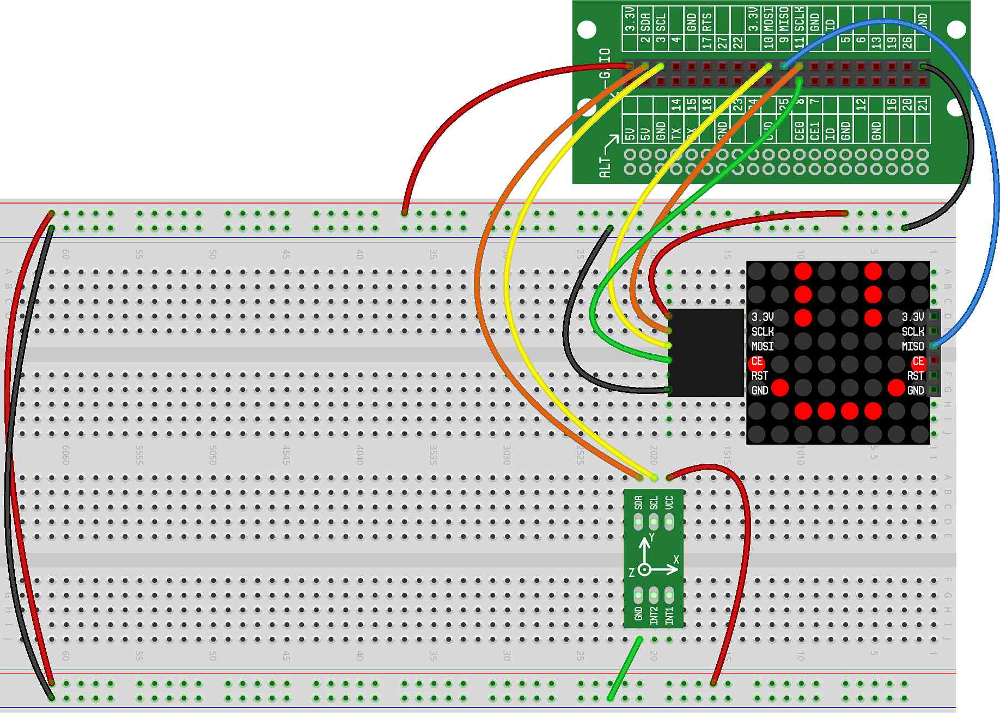

In this project, we will add an LED Matrix to the breadboard and create a "balancing dot" — a single dot on the LED Matrix that moves around as we tilt the CREATOR Kit.
For this project, to keep things simple, we will only move the dot left and right on the LED Matrix.
You'll need to wire up both the Accelerometer and LED Matrix as done in previous projects. Here is what your breadboard should look like once the accelerometer is properly wired:
For our first balancing dot project, we're simply going to put a single dot on the screen and have it move left when the CREATOR Kit is tilted left and move right when the CREATOR Kit is tilted right.
Most of the code should be very familiar, as it comes from the initial project and project. The code that's new is highlighted with arrows:
The new additions we've made are (highlighted with arrows above):
On Line 8, we define the TILT_FORCE. The
TILT_FORCE is how much we have to tilt the CREATOR Kit to make
the dot move.
On Line 9, we define the STEP. The STEP is how
much we should move the dot while the CREATOR Kit is being tilted. Note
that STEP is small — it's less than one.
On Line 10, we define the starting coordinates of the dot.
On Lines 14 through 17, we move the dot if the CREATOR Kit is tilted.
The first part says: if the kit is tilted to the left (greater than the
TILT_FORCE), then decrease the X position. Alternatively, if
tilted right (a negative TILT_FORCE), then increase the X
position.
On Line 20, we draw the dot. Notice that we use the built-in function
round(). We need this because our X position moves by
fractional STEPs. So, our X position is fractional, too — it
might be something like 3.2. However, the coordinates on the LED Matrix are
integers. Therefore, we must round them to the nearest integer
(using the round() function).
Give it a try and see how it works...
Can you make the dot move faster when tilted?
While keep the code above the same (that allows you to balance the dot left and right), can you add code to change the row (Y coordinate) that the dot is on? You can change the row randomly, or in sequential order.